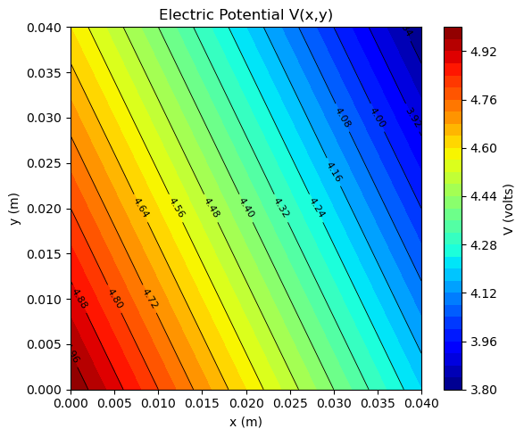
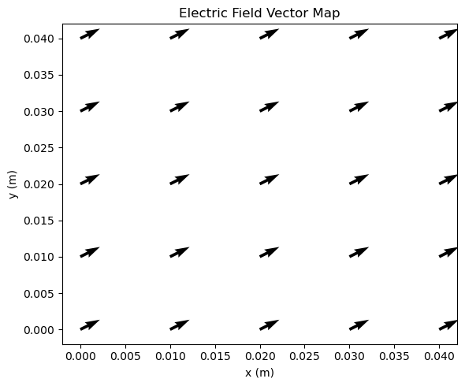

Lab 4 — Electric Fields and Electric Potential#
Overview#
In this lab you will measure electric potential \(V(x,y)\) in two different ways and then compute the electric field from that potential using
Part 1 (Conducting paper mapping): You will use conducting paper to create two electrode geometries:
Parallel plates (a 2D model of a parallel-plate capacitor)
Pointed conductor (“lightning rod”) (a triangle/needle-like electrode)
You will map the potential with a voltmeter, then use Python or Excel to estimate \(\nabla V\) from your measured grid of \(V(x,y)\) values and construct an electric-field map.
Part 2 (PhET simulation): You will use PhET Charges and Fields to map the potential and electric field for an electric dipole. You will compare patterns (equipotentials, field lines, magnitude changes with distance) and connect the dipole to real applications—especially when we move beyond static fields.
About PhET Interactive Simulations
PhET Interactive Simulations is a research-based collection of interactive science simulations designed to help students build intuitive, visual understanding of physical concepts by actively exploring cause-and-effect relationships. PhET was founded at the University of Colorado Boulder by physicist Carl Wieman, who was awarded the 2001 Nobel Prize in Physics (shared with Eric Cornell and Wolfgang Ketterle) for the experimental realization of Bose–Einstein condensation in dilute gases. Wieman’s leadership of PhET powerfully illustrates his commitment not only to cutting-edge research, but also to transforming how physics is taught and learned. The simulations are grounded in physics education research and are intentionally designed to promote exploration, sense-making, and conceptual reasoning—making them an ideal complement to hands-on experiments like this lab, where students connect physical measurements, computational analysis, and visualization.
Learning Objectives#
By the end of this lab, you should be able to:
Explain the relationship between electric potential and electric field:
\[\vec{E} = -\nabla V.\]Measure (or extract) a 2D potential map \(V(x,y)\) on a grid and visualize it using contour/equipotential plots.
Compute the electric field from discrete potential data using finite differences:
\[ E_x \approx -\frac{\partial V}{\partial x}, \qquad E_y \approx -\frac{\partial V}{\partial y}. \]Interpret electric-field maps: direction, relative magnitude, and where fields are strongest.
Describe how geometry affects field concentration (e.g., why fields are enhanced near sharp points).
Recognize why the dipole is a foundational model in E&M, including its role in radiation and time-varying fields.
Background Theory#
1) Electric Potential and Equipotentials#
Electric potential \(V\) (in volts) is defined so that the potential difference relates to work per unit charge:
Surfaces (or curves in 2D) of constant potential are equipotentials. The electric field is always perpendicular to equipotential curves and points “downhill” in potential.
2) Electric Field from the Gradient#
In two dimensions,
So, a rapid change in potential over a short distance implies a large field magnitude:
3) Discrete (Grid-Based) Derivatives (Finite Differences)#
Your data are measured at grid points \((x_i, y_j)\) with spacing \(\Delta x\) and \(\Delta y\).
A common numerical estimate at interior points is the central difference:
Then
At the boundaries, you will need one-sided differences, e.g.
NOTE: In this lab, the provide Python template use the built-in numerical gradient function to compute \(\vec{E} = -\nabla V\) directly from the 2D potential array, but students who prefer Excel (or who want more control) may instead use the finite-difference method explicitly; both approaches are valid, and the finite-difference method can also be implemented manually in Python if desired.
4) Why Sharp Points Matter (Lightning Rod Geometry)#
For conductors, charges rearrange until the conductor is an equipotential. Near sharp points, surface charge density tends to be higher, producing a stronger electric field nearby. Practically: fields concentrate near points, which can promote air ionization and influence discharge paths.
5) The Electric Dipole (Why It’s a Big Deal)#
A dipole is two equal and opposite charges separated by a small distance. The dipole is the first nontrivial charge distribution beyond a single point charge and shows up everywhere:
Molecular physics/chemistry: polar molecules (e.g., water) behave like dipoles in external fields.
Materials: polarization and dielectric response can be modeled using dipoles.
Antennas and radiation: time-varying dipoles are among the simplest sources of electromagnetic waves (the “oscillating dipole” is a cornerstone model for radiation).
Long-range behavior: many neutral systems have a leading far-field that looks dipolar (or higher multipoles if symmetry cancels the dipole).
Even though this lab focuses on static patterns, the dipole is a bridge to what comes next: induction, waves, and radiation.
Equipment Needed#
Part 1 — Conducting Paper Mapping#
Conducting paper sheets (or conductive mapping paper)
DC power supply (low voltage, typically a few volts) or 9 V battery
Electrodes/templates for:
Parallel plates
Pointed/triangular conductor (“lightning rod”)
Leads/alligator clips
Digital multimeter (voltage mode)
Ruler (for grid spacing)
Laptop with Excel or Python (template provided at the end of the note)
Part 2 — PhET Simulation#
Computer with internet
Experimental Procedure#
Part 1 — Mapping \(V(x,y)\) on Conducting Paper#
A. Setup and Calibration#
Place the conducting paper on the table.
Attach the electrodes for the parallel plate configuration if not already attached.
Connect the power supply across the electrodes (start with a low voltage).
Choose a coordinate system: mark an origin and axes along the paper edges.
B. Measuring the Potential Map#
Choose the negative electrode as your reference (ground) for measurements.
Set the multimeter to DC voltage.
For each grid point \((x_i,y_j)\):
Touch the probe tip at the grid point (good contact, consistent pressure).
Record \(V_{i,j}\) relative to the reference electrode.
Collect enough points to see structure clearly (a coarse grid may miss sharp features near the point).
C. Repeat for the “Lightning Rod” Geometry#
Replace the electrodes with the pointed/triangular electrode configuration.
Re-use the same reference system if appropriate, but consider taking more measurements near the pointed region where \(V\) changes rapidly.
Record a new potential map \(V(x,y)\).
Part 2 — PhET Dipole Mapping (Charges and Fields)#
Open the PhET simulation and set up an electric dipole (equal and opposite charges separated by a distance).
Create a measurement grid in the simulation plane:
Choose a spacing and a region large enough to show the overall pattern.
Record \(V(x,y)\) at grid points (either by reading values directly or by using built-in probes).
Use your recorded \(V(x,y)\) to compute \(\vec{E}(x,y)\) using the same numerical gradient method as Part 1.
Compare your computed field vectors to the simulation’s field vectors (direction and relative magnitude).
Data Analysis (Python or Excel)#
1) Organize Your Data#
Create a table of:
\(x_i\), \(y_j\)
\(V_{i,j}\)
If your data are on a rectangular grid, store \(V\) as a 2D array with known \(\Delta x\), \(\Delta y\).
2) Plot the Potential Map#
Make a contour plot (equipotentials) of \(V(x,y)\).
Label axes with units.
3) Compute the Field Components#
Using finite differences:
Then compute magnitude:
4) Visualize the Electric Field#
Make a vector (quiver) plot of \(\vec{E}(x,y)\).
Optionally overlay field vectors on the equipotential contour plot.
Consider normalizing vectors for direction-only plots, or use magnitude shading + vectors.
5) Compare Geometries#
For parallel plates vs pointed conductor vs dipole, compare:
Equipotential shapes
Where \(|\vec{E}|\) is large
How quickly \(V\) changes with position
Analysis Questions (Include in Your Report)#
Orthogonality: Using your plots, explain how you can verify that \(\vec{E}\) is perpendicular to equipotential lines.
Parallel plates: Identify a region where the field is approximately uniform. What evidence in your \(V(x,y)\) data supports this?
Edge effects: Where do you see fringing fields in the parallel-plate configuration? How do they appear in both \(V\) and \(\vec{E}\) plots?
Point enhancement: In the lightning-rod geometry, where is \(|\vec{E}|\) largest? Explain qualitatively why geometry causes this.
Dipole symmetry: Describe the symmetry of the dipole potential and field. How does the pattern differ from a single point charge?
Static to dynamic connection: An oscillating dipole is a classic radiation source. Based on your static dipole field pattern, what features do you think might matter when the dipole moment changes with time?
Discussion#
In your discussion section, connect your results to physics meaning:
Describe how the shape of conductors controls equipotentials and concentrates fields.
Explain differences between uniform-field regions and high-gradient regions.
Discuss limitations: grid resolution, probe contact variability, and how numerical derivatives amplify measurement noise (small errors in \(V\) can create noticeable variation in \(\vec{E}\)).
Highlight the importance of the dipole:
Many neutral systems have dipole-like behavior at moderate distances.
Dipoles are central to polarization in materials and to how matter responds to fields.
In time-varying cases, dipoles connect directly to electromagnetic waves and antennas (one of the simplest and most important radiation models in E&M).
Report Checklist (Beyond the standard expexted content)#
Include:
A labeled photo of each setup (parallel plates, lightning rod)
Example Tables of \(V(x,y)\) data (no need to show all your data)
Equipotential plots for each geometry
Computed field vector plots for each geometry
Responses to analysis questions
Data Table Template#
Table 1 — Electric Potential and Field Mapping Data
| x (cm) | y (cm) | V (Volt) |
|---|---|---|
| 0.0 | 0.0 | 5.00 |
| 1.0 | 0.0 | 4.80 |
| 2.0 | 0.0 | 4.60 |
| 0.0 | 1.0 | 4.90 |
| 1.0 | 1.0 | 4.70 |
Note:
\(x\) and \(y\) are measured relative to the chosen origin on the conducting paper or simulation grid.
Python Template#
If you want to test this script, you can download this sample data file:
NOTE: The file is a comma-separated values (CSV) file in which the first column contains the \(x\)-coordinate (cm), the second column contains the \(y\)-coordinate (cm), and the third column contains the electric potential \(V\) (volts) measured at that location.
# --------------------------------------------------
# Lab 4 — Electric Potential to Electric Field
# Python Analysis Template
# --------------------------------------------------
%reset -f
# -----------------------------
# Imports
# -----------------------------
import numpy as np
import pandas as pd
import matplotlib.pyplot as plt
# -----------------------------
# Load data if in CSV format...otherwise just code directly
# -----------------------------
# Expected CSV format:
# x_cm, y_cm, V
#
# Example:
# 0.0, 0.0, 2.45
# 1.0, 0.0, 2.30
# 0.0, 1.0, 2.10
#
# Update the filename as needed
data = pd.read_csv("potential_map.csv")
# -----------------------------
# Extract columns
# -----------------------------
x_cm = data["x_cm"].values
y_cm = data["y_cm"].values
V = data["V"].values
# Convert cm → m
x = x_cm * 1e-2
y = y_cm * 1e-2
# -----------------------------
# Create grid
# -----------------------------
# Assumes data lie on a rectangular grid
x_unique = np.unique(x)
y_unique = np.unique(y)
X, Y = np.meshgrid(x_unique, y_unique)
# Reshape potential into 2D array
V_grid = V.reshape(len(y_unique), len(x_unique))
# Grid spacing
dx = x_unique[1] - x_unique[0]
dy = y_unique[1] - y_unique[0]
print(f"Grid spacing: dx = {dx:.3e} m, dy = {dy:.3e} m")
# -----------------------------
# Compute electric field
# E = -grad(V)
# -----------------------------
Ey, Ex = np.gradient(V_grid, dy, dx)
Ex = -Ex
Ey = -Ey
E_mag = np.sqrt(Ex**2 + Ey**2)
# -----------------------------
# Plot equipotential map (colored background)
# -----------------------------
plt.figure(figsize=(6,5))
filled = plt.contourf(
X, Y, V_grid,
levels=30,
cmap="jet"
)
# Optional: overlay contour lines
contours = plt.contour(
X, Y, V_grid,
levels=15,
colors="black",
linewidths=0.6
)
plt.clabel(contours, inline=True, fontsize=8)
plt.xlabel("x (m)")
plt.ylabel("y (m)")
plt.title("Electric Potential V(x,y)")
plt.colorbar(filled, label="V (volts)")
plt.tight_layout()
plt.show()
# -----------------------------
# Plot electric field vectors
# -----------------------------
plt.figure(figsize=(6,5))
plt.quiver(X, Y, Ex, Ey)
plt.xlabel("x (m)")
plt.ylabel("y (m)")
plt.title("Electric Field Vector Map")
plt.tight_layout()
plt.show()
# -----------------------------
# Combined plot: equipotentials + E-field (colored background)
# -----------------------------
plt.figure(figsize=(6,5))
# Filled contour for potential (color background)
filled = plt.contourf(
X, Y, V_grid,
levels=30,
cmap="jet"
)
# Equipotential lines
contours = plt.contour(
X, Y, V_grid,
levels=15,
colors="black",
linewidths=0.6
)
plt.clabel(contours, inline=True, fontsize=8)
# Electric field vectors
plt.quiver(X, Y, Ex, Ey, color="black")
plt.xlabel("x (m)")
plt.ylabel("y (m)")
plt.title("Electric Field and Equipotentials")
plt.colorbar(filled, label="V (volts)")
plt.tight_layout()
plt.show()
# -----------------------------
# Save processed data (optional)
# -----------------------------
output = pd.DataFrame({
"x_m": X.flatten(),
"y_m": Y.flatten(),
"V": V_grid.flatten(),
"Ex": Ex.flatten(),
"Ey": Ey.flatten(),
"|E|": E_mag.flatten()
})
output.to_csv("electric_field_results.csv", index=False)
print("Analysis complete. Results saved to electric_field_results.csv.")
Grid spacing: dx = 1.000e-02 m, dy = 1.000e-02 m


Analysis complete. Results saved to electric_field_results.csv.